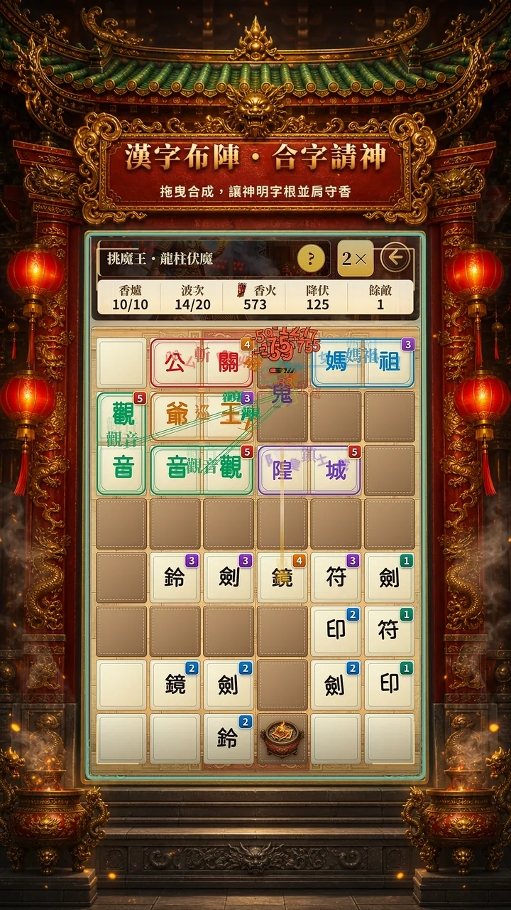
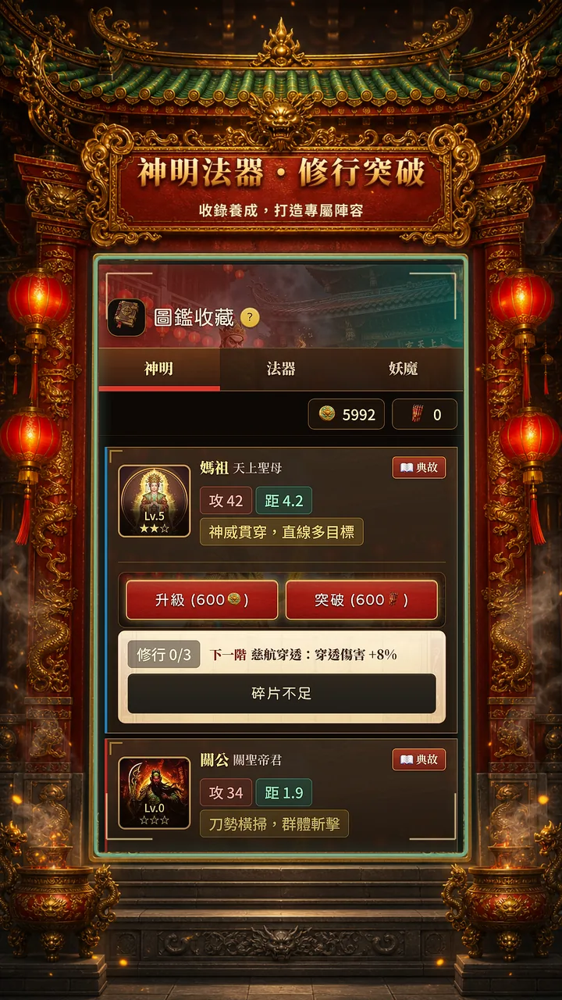
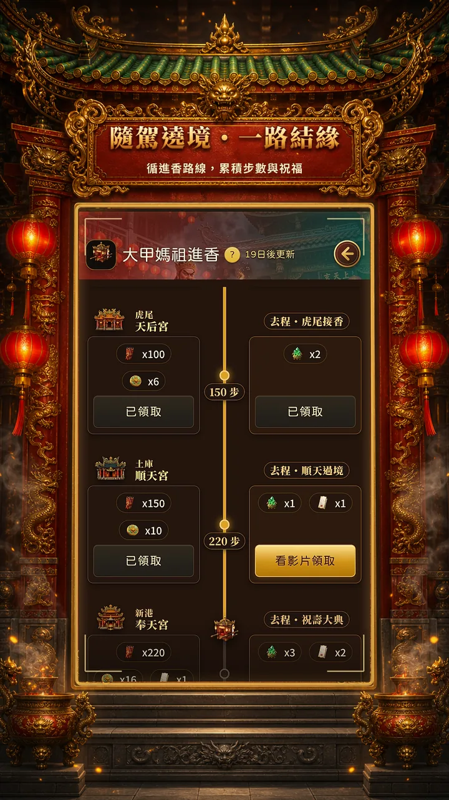

01 / CORE RULES
漢字不只是文字，也是你的塔防陣法
《廟埕守香》（Incense Ashes）是以台灣民俗信仰為主題的漢字策略塔防遊戲。玩家把法器布置在 6×8 棋盤上，依敵人路線安排攻勢，透過同字合成強化陣容，並用特定字根組合「合字請神」。
陣｜拖曳布陣
將法器放上棋盤，考量道路、距離與敵人特性，安排近遠攻勢，並隨戰況調整位置。
合｜同字合成
相同法器與等級可進行合成強化。在提升單位強度與保留棋盤空間之間做選擇。
神｜合字請神
安排特定漢字字根相鄰，例如「媽＋祖」，就能請神顯靈並發動對應能力。
守｜面對多種敵勢
十章主線、一百道策略關卡，另有極限挑戰與資源試煉，測試不同布陣思路。

02 / STARTER STRATEGY
新手布陣，先想清楚這四件事
下列為依官網玩法整理的一般策略建議，不是指定關卡的必勝配置；實際仍需配合當前敵人與可用法器。
- 先看路線，再放法器因為法器有位置與射程概念，優先觀察敵人行進方向，避免把主要戰力集中在無法有效覆蓋的區域。
- 保持近遠攻勢的彈性面對不同敵人，不要只考慮單一輸出點。官方玩法允許隨戰況交換位置，應利用這個特色調整陣型。
- 評估是否要立即合成相同法器與等級可合成強化，但合成後也可能改變棋盤上的單位數量與佈局；先比較目前最缺哪一種能力。
- 為請神字根留下空間除了法器強度，也要注意可否讓神明字根相鄰。若想觸發合字請神，就不能只看單格的攻擊效率。
路線決定站位，敵勢決定配置；合成影響戰力與空間，合字則帶來額外的神明能力。
03 / SUMMON THE DEITIES
合字請神：把神明名字變成戰鬥機制
這是《廟埕守香》最鮮明的特色之一。官網介紹中，特定字根只要依遊戲規則相鄰，就能請神顯靈。以下是公開展示的組字範例：
媽 ＋ 祖
以媽祖相關字根組合，呼應台灣廟埕與進香文化的世界觀。
關 ＋ 公
透過兩個字根相鄰的方式，形成「關公」的請神組合。
觀 ＋ 音
以「觀音」字根組合觸發請神概念，為布陣增加另一個考量。
字根的位置同樣重要
組字需要考慮相鄰關係，因此棋盤留位與法器配置可以一起思考。
各神明的具體技能、數值與可用條件，以遊戲內顯示為準；此頁不虛構尚未公開的效果。

04 / CAMPAIGN & DAILY
不只有塔防，還有神明養成與廟埕日常
除了合字布陣，官網還展示了主線推進、進香路線與每日課業等元素。以下整理遊戲公開介紹的內容：
| 主線章節 | 10 章、共 100 道策略關卡，包含章節魔王挑戰。 |
|---|---|
| 極限挑戰 | 20 波極限挑戰，另有資源試煉。 |
| 收藏與養成 | 收錄神明、法器與妖魔圖鑑，能培養神明並搭配上陣陣容。 |
| 廟埕日常 | 求籤、遶境、香油箱、每日三炷香課業等系統。 |
| 世界觀 | 以台灣民俗廟埕為舞台，結合守香、進香與神明守護的題材。 |

因為不同關卡的敵人與手上持有的法器會影響配置，這份指南先整理通用思路；實際陣容仍以當前版本和遊戲內規則為準。
05 / QUESTIONS
廟埕守香常見問題
《廟埕守香》是什麼類型的遊戲？
它是一款以台灣民俗文化為題材，結合漢字合成、法器布陣與神明請神的 Android 策略塔防遊戲。
合字請神有哪些組合？
官網列出的例子包括「媽＋祖」、「關＋公」與「觀＋音」。技能效果與其他組合以實際遊戲為準。
有多少關卡？
官方介紹為 10 章主線、100 道策略關卡，並包含極限挑戰和資源試煉等模式。
可以在哪裡下載？
可從 Google Play 前往《廟埕守香》Android App 頁面，確認所在地區的實際提供情況。
準備好開始守護香火了嗎？
前往官方遊戲介紹，或直接到 Google Play 查看 App。